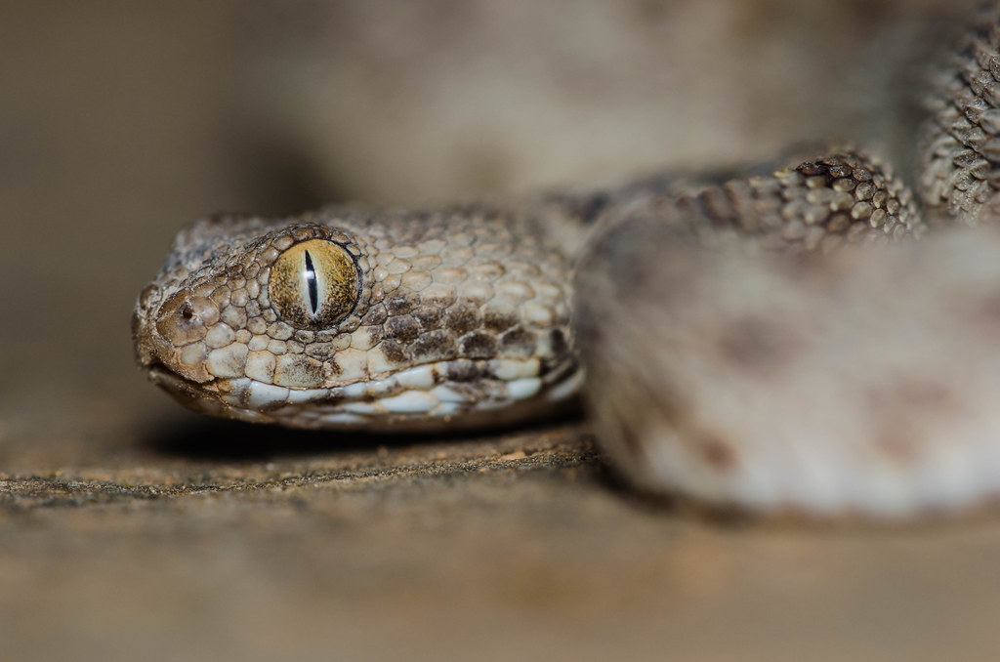

Top 10 Deadliest Animals
138,000 deaths per year
The venomous saw-scaled viper holds the record as the most deadly snake in terms of mortality. Snakes overall are high up on the list of deadly creatures as snake bites are responsible for as many as 138,000 deaths annually.
The saw-scaled viper is a particularly aggressive species, making it more deadly than the snake that is actually the most highly toxic but also shy, the inland taipan (Oxyuranus microlepidotus).
Its aggressive nature, paired with its potent venom and presence in highly populated areas, make the saw-scaled viper a snake to fear.
